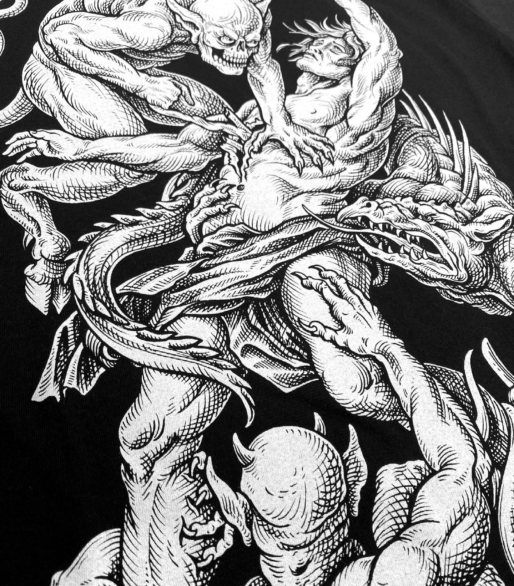
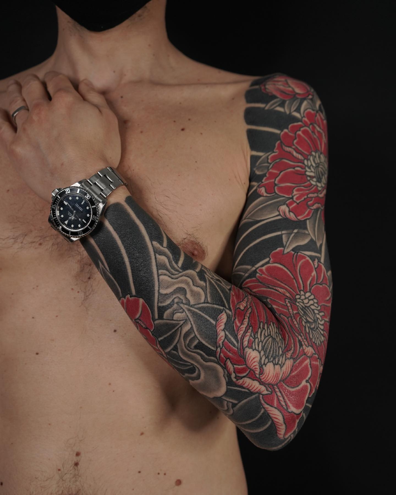
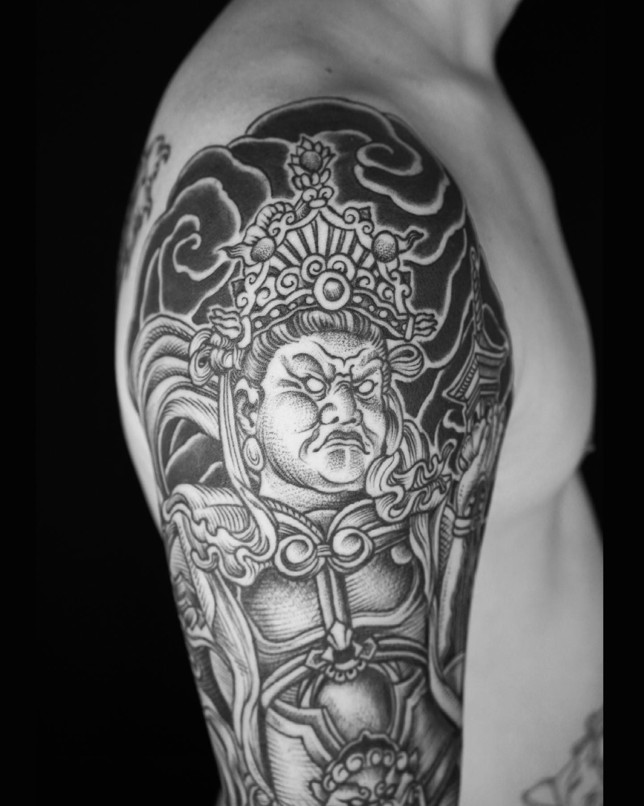
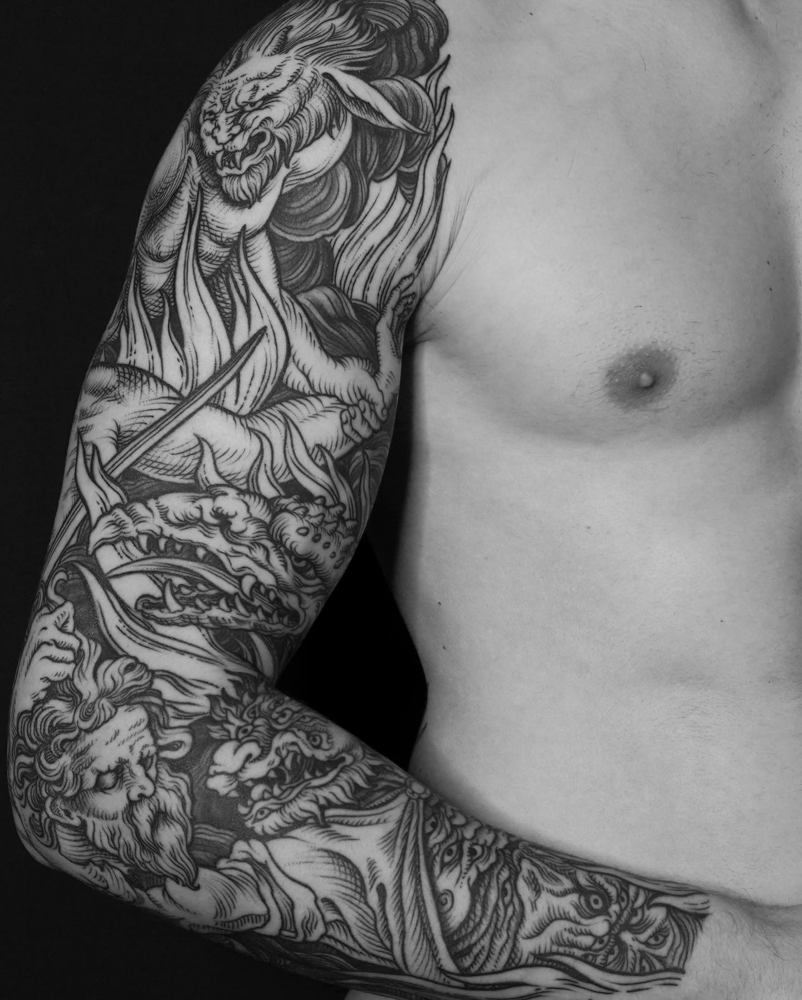
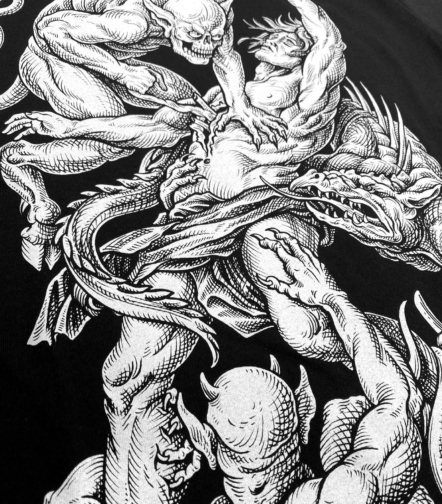
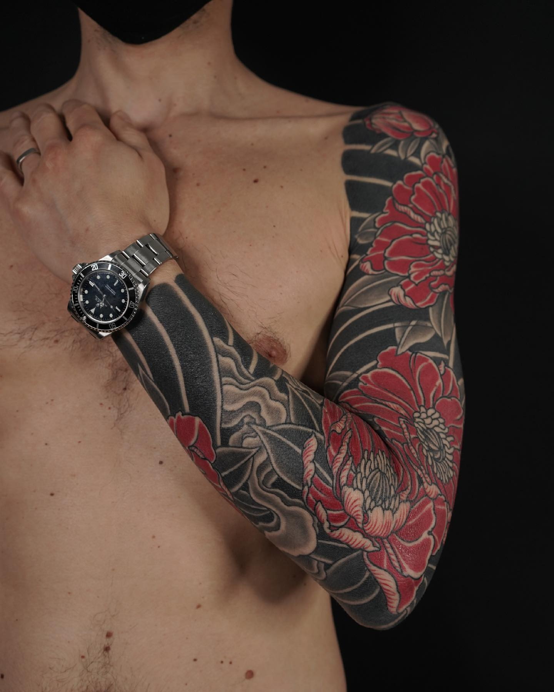
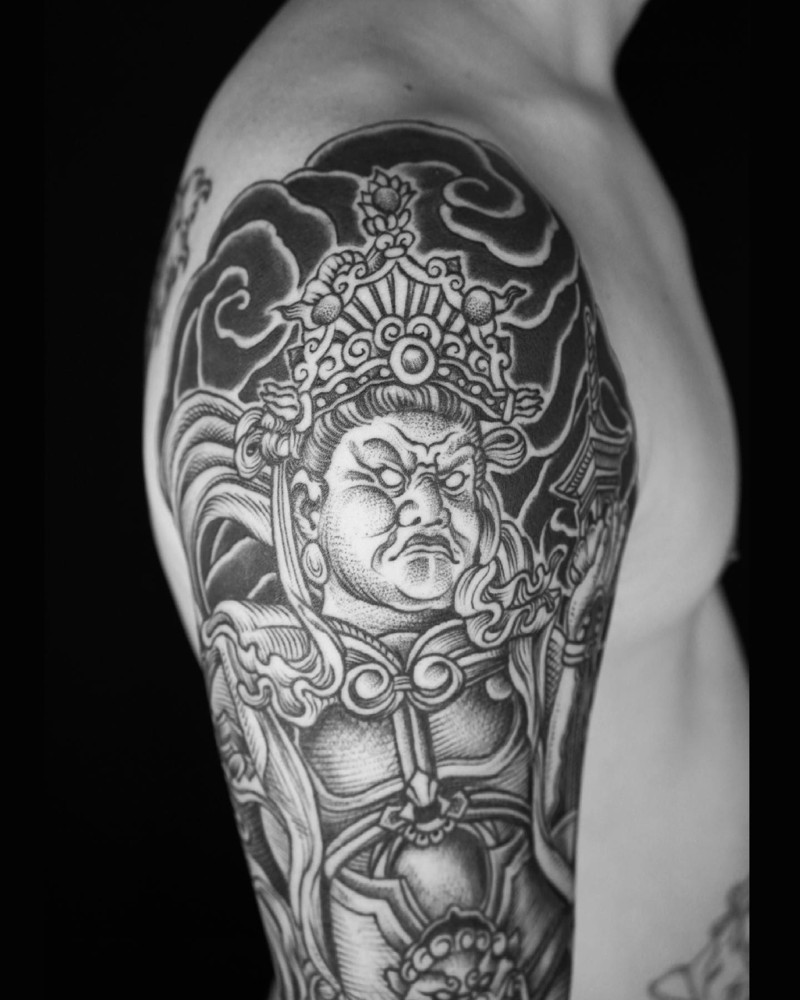
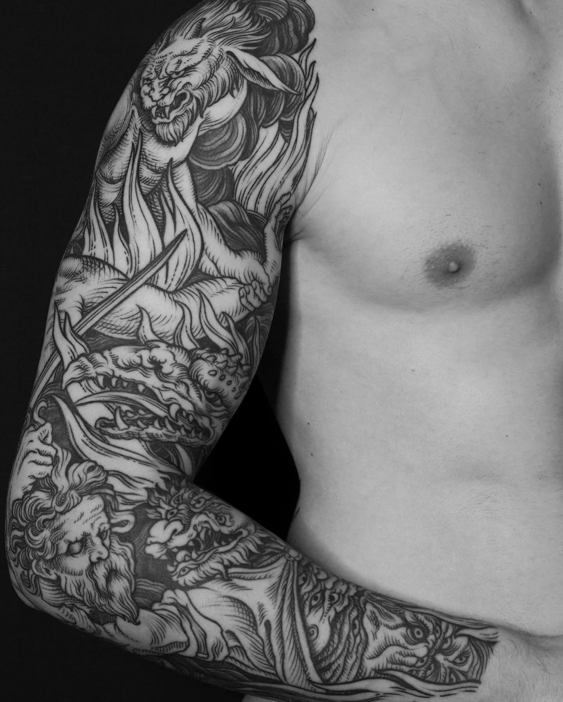

Peintre, illustratrice au sein du collectif Jeanspezial durant 7 ans,
le tatouage s'est imposé peu à peu dans mon travail.
En 2010, j'ai poussé les portes du célèbre salon Tin-tin Tatouages à Paris. Le maître des lieux, Tin-tin, m'a prise sous son aile et j'ai débuté mon apprentissage.
Passionnée par le travail de la ligne et influencée par les oeuvres de Gustave Doré ou Albrecht Dürer, mon style de tatouage s'est naturellement orienté vers la gravure.
Après 6 années aux côtés de Tin-tin, je prends mon envol et quitte la région parisienne.
En septembre 2016, Maud Dardeau Tatouages ouvre ses portes dans le centre historique de Bordeaux.
Painter, illustrator in the collective Jeanspezial for 7 years, the
tattoo has gradually established itself in my work. En 2010, j'ai poussé les portes du célèbre salon Tin-tin Tatouages à Paris. Le maître des lieux, Tin-tin, m'a prise sous son aile et j'ai débuté mon apprentissage.
Passionnée par le travail de la ligne et influencée par les oeuvres de Gustave Doré ou Albrecht Dürer, mon style de tatouage s'est naturellement orienté vers la gravure.
Après 6 années aux côtés de Tin-tin, je prends mon envol et quitte la région parisienne.
En septembre 2016, Maud Dardeau Tatouages ouvre ses portes dans le centre historique de Bordeaux.
In 2010, I pushed the doors of the famous salon Tin-tin Tatouages in Paris. The master of the place, Tin-tin, took me under his wing and I began my apprenticeship.
Passionate about the work of the line and influenced by the works of Gustave Doré or Albrecht Dürer, my style of tattooing naturally turned towards engraving.
After 6 years alongside Tin-tin, I left the Paris region.
In September 2016, Maud Dardeau Tatouages opens its doors in the historic center of Bordeaux.
Maud